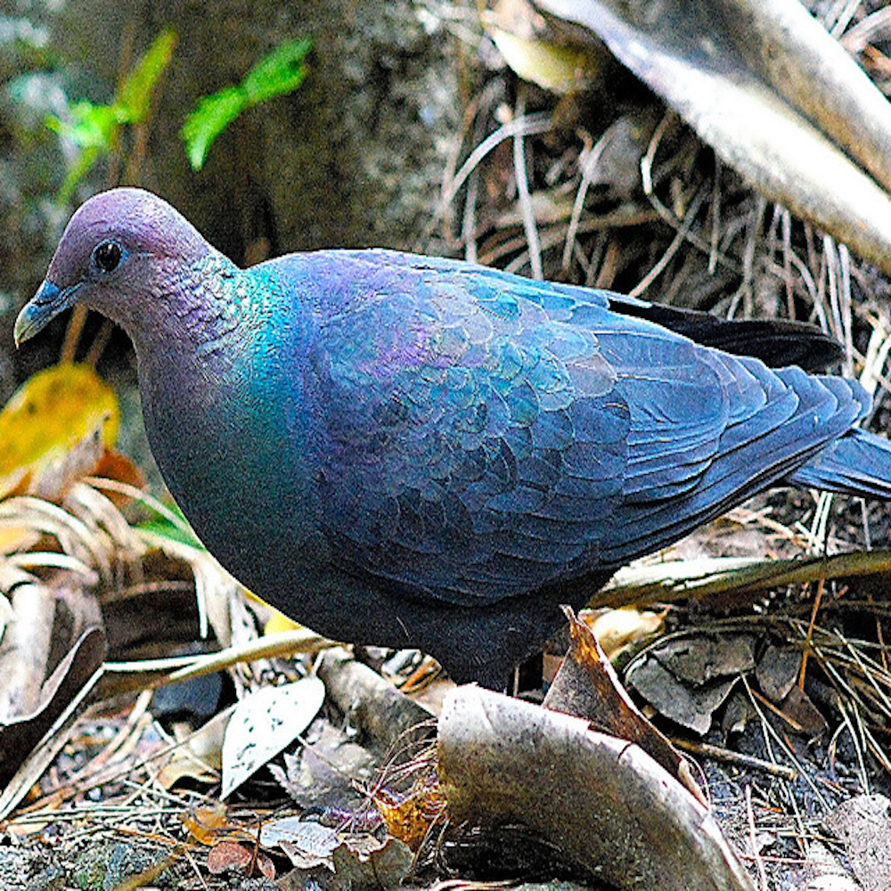
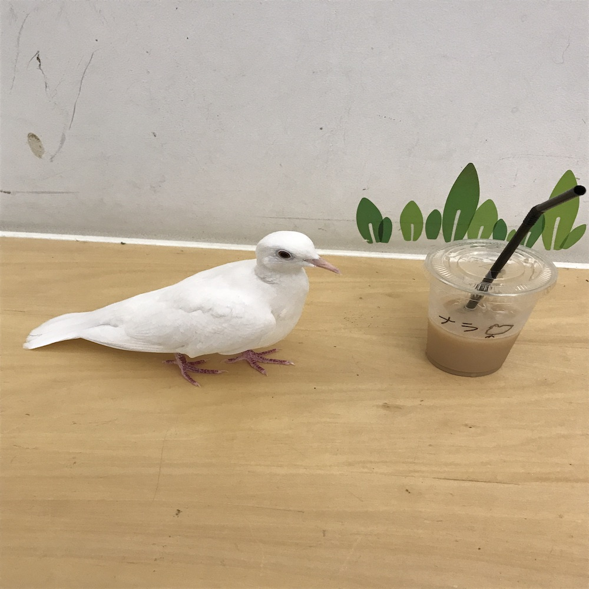
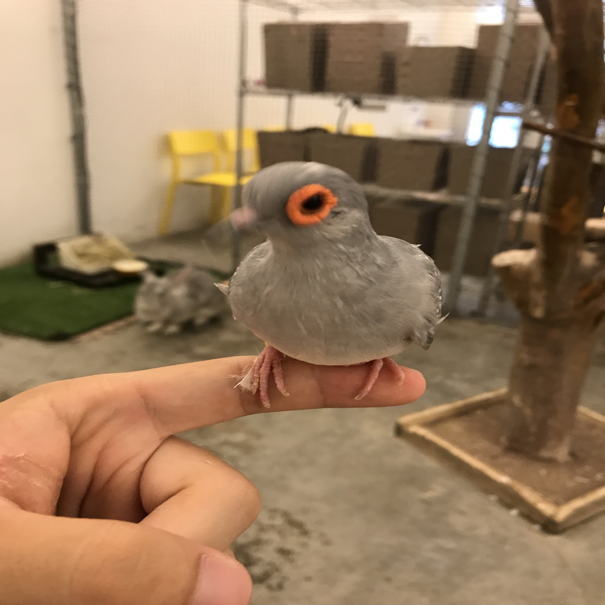

{% extends 'base.html' %}
{% block main %}
このページでは、このWebアプリで検知できるハト🐦と日本にいるその他のハト🐦、本アプリ製作者が個人的に好きなハト🐦について解説します。
はじめに(ハトの基礎知識)
・ひらがなで「はと」、漢字で「鳩」、英語で「pigeon(dove)」、ローマ字で「hato」
・歩く時に首が動いている様に見えるが、これは頭を同じ場所に留めて物をよく見ようとする動きを早いペースで繰り返すのでそう見える。
・水溜り等の下にある水に対して、頭を上げずにゴクゴクと水を吸い上げて飲むことができる。
・歯が無いので、小石を飲み込んで胃を動かすことにより同様の役割を果たしている。ハトが何もなさそうなところを啄んでいるのはこのため。
・鳩胸は協力なエンジンであり、体重の31~44%を占めている。この筋肉パワーで時速60~100キロを叩き出し、タカ等の強襲を振り切ることができる。
・平和の象徴の由来は旧約聖書における「ノアの方舟」のエピソードで、方舟にオリーブの小枝を持ち帰ったことで平和の訪れを知らせたことである。ちなみにそれを広めたのは画家パブロ・ピカソであるという説がある。
・世界に351種類存在し、日本には12種類いるとされている。その内、常に日本にいるのは7種類である。
・世界最大のハトは「オウギバト」、世界最小のハトは「コビトアオバト」である。
・人との関わりが強く、ある時は食料に、ある時は戦争の情報伝達係に、ある時はペットとして人と共に生きてきた。
・"良い"生物である
Webアプリで検出できるハト🐦
-
カワラバト(ドバト)
私たちが最もよく見かける灰色のハトさん。日本全国に広く分布している。
和名はカワラバトだが、私たちがよく読んでいる「ドバト」という呼び方がある。これは野生のカワラバトを品種改良した飼養品種の総称からきている。
色や模様のバリエーションが豊富で、厳密に分類すると150種類もある。
元々は崖の鳥だったが、近年では人工建築物のお世話になることが多い。寝る場所と営巣場所が同一なのは鳥の中では極めてレア。
集団でいることが多く、オスがメスを全力で追いかけ回して求愛している様子を見ることができる。
非常に歴史のあるハトであり、ある時は家禽化しやすい食料に、ある時は源氏物語に登場し、ある時は平和の象徴なのに戦いのシンボルになっている(八幡神社)。
-

キジバト
街中で見かけたらラッキーな方の茶色いハトさん。日本全国に広く分布している。
カワラバトと違って孤独を好み、1~2羽でいることが多い。
山鳩という別名の通り、昔は山に住んでいたが、だんだんと街中に降りてきた。
営巣が適当なことで有名で、図鑑を見ると「巣が粗雑」等の説明が書かれていることが多い。
朝方によく聞く「でーでぽっぽー」という鳴き声の正体は、フクロウではなくキジバトである。
-
アオバト
山に住んでるハトさん。人里まで降りてこない上、森の保護色なので見つけにくい。
和名はアオバトだが、英名はJapanese Green Pigeonである。
営巣の期間が非常に短く、巣の発見報告が殆ど無い。
ナトリウム摂取のために海水を飲む唯一のハトであり、波に飲まれて死んでしまうこともある。
ノブドウ等の果実が主食だが、どんぐりを丸呑みにすることがある。
-

シラコバト
埼玉県の県の鳥や国の天然記念物に指定されているハトさん。埼玉県東部を中心に関東地方のごく一部に分布している。
元々は海外から持ち込まれた外来種であり、江戸時代には鷹狩りの的として利用された。
度重なる餌の供給源の取り締まり等により、残念ながら日本では絶滅しかけている。
しかしヨーロッパ・全米を制覇しており、ポテンシャルは高いと言える。
埼玉県のマスコットキャラクターのコバトンはシラコバトをモチーフにしているらしいが、全然似ていない。
-
カラスバト
伊豆諸島等の離島にのみ生息しているハトさん。カラスみたいに真っ黒だからカラスバトと名付けられた。
全長40cmと巨大であり、特徴的な鳴き声からウシバトの異名を持つ。
島暮らしにこだわっており、天敵の回避や食料の独占等の利益を享受している。
食べ物を求めて一日に何回もアイランドホッピングを繰り返す。
日本にしかいない世界でも貴重なハトなので、1971年に国の天然記念物に指定されている。
その他日本にいるハト🐦
-
キンバト
日本では最南端の先島諸島にのみ生息するハトさん。
1972年に国の天然記念物に指定されているが、最近ではよく見られるようになっている。
翼や背中に金属光沢があり、見る角度によっては金色に光ることが名前の由来になっている。
森の中を歩き回り、首を振りながら落ちている木の実等を探して食べている。
-
ズアカアオバト
南西諸島に生息するアオバトの亜種のハトさん。
本土に生息するアオバトより大きく、色も所々違うので見分けるのは難しくない。
日本にいるズアカアオバトは頭が赤くないが、台湾やフィリピンにいるハトはちゃんと頭が赤い。
アオバトと違って海水や温泉水を飲まない。
キンバトと生息地域が重複しているが、こちらは木に成っている果実を主食としており、資源を共有して共存している。
-

アカガシラカラスバト
小笠原諸島に住み着いているカラスバトの亜種のハトさん。
頭部がほんのり赤くなっていて、地元ではアカポッポの愛称で親しまれている。
人間が連れてきた猫とかいう害獣のせいで一時期絶滅の危機に晒された。その後、あらゆる手を尽くして猫畜生を捕獲し、ハトさんの個体数を大幅に回復させた。
ちなみに、上野動物園でこのハトを見ることができる。
本アプリ製作者が個人的に好きなハト🐦
-
ジュズカケバト
”良い“生物🐦
私がハト好きになったきっかけは、中学三年時にTwitterでこのハトの素晴らしい動画が流れてきたためである。
首にある黒い輪の模様がジュズをかけているように見えることからこの名前がついている。
日本ではペットとして愛されており、ペットショップ等で見かけることがあるらしい。私は一度も見たことない。
表情が非常に豊かであり、810通りあるとされている。
クリーム色の羽毛とエクセレントな形状が"良"く、お餅に擬態することで人間からの捕食を免れている。
本アプリでジュズカケバトの画像を入れると、シラコバトと判定されることが多い。
-

ギンバト
ジュズカケバトの白変種。
こちらも日本ではペットとして親しまれているが、あの手品に使われるハトでもある。
その理由は小柄なことに加えて、暗くて狭いスペースに入れるとじっとする習性があり、いきなり現れて飛び立つ時の見栄えが良いためである。
鳥カフェ等に行くと、ギンバトがいることがある。非常に人懐こい生き物なので、あまりにも"良い"とされている。
-
モリバト
モリモリしてるから好きです🐦
-

ウスユキバト
全長約20cmしかない非常に小さいハトさん。
諸国でペットとして愛されている。
ググると「世界最小のハト」とかいうガセ情報が出てきますが、世界最小のハトはコビトアオバトです。
-
ケレルー(Kererū)
ニュージーランドにいる大型のハトさん。
柔らかい木の実が大好物で、熟れて落ちてしまった木の実も平気で食べる。
夏場ではそのような木の実は自然発酵しており、アルコールを含んでいる場合がある。
つまり、それを食べてしまったハトは酔っ払ってしまい、飲酒飛行の末に止まり木から落下なんてこともあるらしい。
でも天敵がいないので、安心して酔っ払える。こういう人生を歩みたいですね。
{% endblock %}